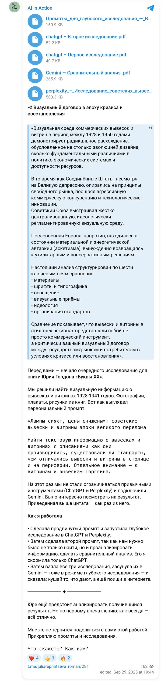
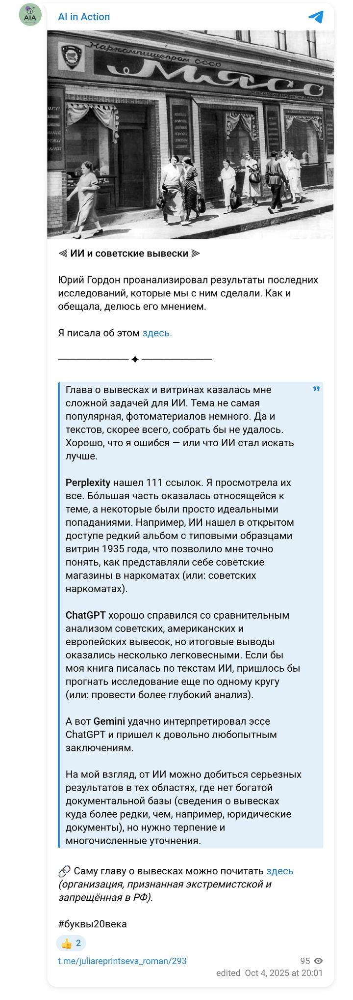

Книга «Буквы XX века» · сентябрь — октябрь 2025 · цикл 04
Найти визуальные и текстовые источники о вывесках и витринах 1928–1941: как производились, были ли стандарты, чем отличались столица и периферия; отдельно — Торгсин.
Два брифа — на сбор корпуса и на сравнительный анализ (СССР 1928–41, США времён Депрессии, послевоенная Европа). Три исследования каскадом: результаты ChatGPT и Perplexity (111 ссылок) — на вход Gemini с поиском западных источников.
ChatGPT Deep Research, Perplexity, Gemini Deep Research
Ниже — брифы, которые получали модели, готовые отчёты в PDF и документы, а также публикации по ходу работы.
Брифы
Мой документ · рабочий документ проекта · 29.09.2025
Тема Советские вывески и витрины 1928–1941 годов в СССР (с акцентом на Торгсин): визуальные источники, стандарты, практики производства, различия столица/периферия.
Цель Собрать максимально полный корпус визуальных материалов (фото, иллюстрации, плакаты, страницы из книг и журналов, схемы/чертежи) по вывескам и витринам в 1928–1941 гг. в СССР. Собрать текстовые источники: нормативы/стандарты, инструкции, методички, статьи о технологии производства вывесок/оформления витрин, практики эксплуатации, а также заметки и полевые наблюдения современников. Выявить различия между столицей (Москва/Ленинград) и периферией (регионы, промышленные города, малые города). Отдельно проработать витрины и вывески Торгсина (сети магазинов): визуальный корпус + документы о стандартизации, оформительских практиках, кейсах.
География и период — География: СССР (Москва, Ленинград, столицы союзных/автономных республик, губернские/областные центры, малые города). — Период: 1928–1941 (строго до начала Великой Отечественной войны). Допускаются единичные материалы 1926–1927 и 1942–1945 только как контекст при чётком обосновании в заметках.
Объём и глубина — Визуальные источники: «чем больше — тем лучше», но без дублей; при дублировании хранить лучшее качество и отметить связи. — Текстовые источники: приоритезировать первичные (нормативы, тех. инструкции, ГОСТ/ОСТ/ведомственные циркуляры, служебные записки, методички, отраслевые журналы), затем — вторичные обзоры и исследования.
A. Визуальные материалы
B. Текстовые материалы
Типология:
Спецраздел «Торгсин»: Корпус изображений, регламенты, фирменные элементы, кейсы витрин (ассортимент/ценники), выводы о визуальном коде и стандартизации.
Индекс-файл проекта (index_files.md): перечень всех собранных файлов/таблиц с аннотациями и статусом (готово/в работе/спорно). Сводный отчёт (5–8 страниц): ключевые находки, примеры/иллюстрации, ссылки на каталоги, открытые вопросы.
Стратегия поиска (этапы) Сид-скан по институциям: национальные/региональные архивы кинофото/печатной прессы, цифровые коллекции музеев и библиотек, газетные базы, отраслевые журналы дореволюц./советского периода, каталоги выставок.
Ключевые запросы (RU + возможные варианты) — комбинировать и варьировать: «советские вывески 1930», «оформление витрин 1930-е», «витрина магазина 1935», «световая вывеска 1930-е», «эмалированные таблички 1930», «типовые вывески», «нормы вывесок», «оформитель витрин», «методические указания витрины», «ГОСТ вывеска 1930», «ОСТ вывеска», «инструкция оформление витрин», «магазин Торгсин витрина», «Торгсин вывеска», «Торгсин фасад», «Советская торговля журнал витрина», «рекламное оформление 1930-е», «витрина универмаг Москва 1936», «навесная вывеска 1930», «неоновая реклама СССР 1930-е» (если применялась), «световая реклама Москва 1930», «ленинград витрина 1930», «областной город витрина 1930».
Приоритеты/очередность (если времени мало): Торгсин: визуал + нормативы → Столицы (Москва/Ленинград): витрины и стандарты → Региональные кейсы (по 3–5 городов разных масштабов) → Таймлайн и типология → Сводный отчёт.
Отчётность и контроль: Каждые N часов — краткий лог: что найдено, сколько объектов добавлено, где «узкие места». В конце — «чёрный список» ложных/сомнительных источников и дублирующих коллекций.
Отлично, вы дали очень подробное техническое задание. Прежде чем я начну глубокое исследование, уточните, пожалуйста:
- Есть ли приоритет по языкам источников, кроме русского? — да, включать
- Нужно ли отдавать приоритет каким-либо конкретным архивам (РГАНТД, Президентская библиотека, «Артефакт», Фотохроника ТАСС)? — все архивы
- Нужно ли включать музейные артефакты (макеты витрин, таблички, вывески)? — да, включать
- Планируете ли вы использовать результаты в печатной книге? — да, планирую
Теперь сделай на основе этого исследования сравнительный анализ вывесок и витрин в послевоенной Европе, США времен Великой Депрессии и советских. Используй эту информацию и информацию из прикрепленного файла — Perplexity.
Уточнения модели и ответы:
- Временные рамки для послевоенной Европы? — 1945–1950
- Для США — только Великая депрессия или шире? — 1929–1950 с акцентом на Великую депрессию
- Какие аспекты важнее: материалы, шрифты, типографика, освещение, визуальные приёмы, идеология, организация торговли? — все важны; ищи также в интернете по западным источникам
Результаты
Документ проекта · 29.09.2025
Визуальная среда коммерческих вывесок и витрин в период между 1928 и 1950 годами демонстрирует радикальное расхождение, обусловленное не столько эволюцией дизайна, сколько фундаментальными различиями в политико-экономических системах и доступности ресурсов. США, несмотря на Великую Депрессию, опирались на принципы свободного рынка; Советский Союз выстраивал жестко централизованную, идеологически регламентированную визуальную среду; послевоенная Европа находилась в состоянии материальной и энергетической автаркии.
Анализ структурирован по шести осям: материалы, шрифты и типографика, освещение, визуальные приемы, идеология и организация стандартов.
Функция рекламы была строго лимитирована: расходы на нее не могли превышать 0,1% от оборота. Вывески несли либо утилитарный лозунг («При запахе газа звоните 04»), либо название ведомства («Гастроном», «Райпотребсоюз»).
Стандартизация и типографическая диктатура. В 1930 году Всесоюзный комитет по стандартизации принял ОСТ 1337 «Шрифты гартовые», закрепив всего 31 шрифт для общественных нужд. Уличные надписи — крупные рубленые (гротескные) прописные буквы, кегль 100–300 мм и более. Унификация лишала шрифт индивидуальности, делая его частью государственного аппарата.
Столица и периферия. В столицах — электрическая подсветка и неон (светящиеся лозунги «Победа социализма»); в регионах — деревянные или металлические таблички без подсветки.
Кейс Торгсина. На фасадах — крупные резные металлические или световые надписи, часто дублированные латиницей; в витринах — дефицит и роскошь (мех, золото).
Агрессия дизайна как антикризисная мера. Неон — дешёвый и заметный; тысячи мелких магазинов ставили цветные вывески, чтобы выделиться на фоне бедности. Типографика Арт-Деко и Модерна: жирные заглавные, курсив, стилизованные логотипы; «графическая агитация» — приказ покупать. Витрины «кинематографичны».
Материальная регрессия и дефицит энергии: дерево, простое стекло, остатки довоенных конструкций; неон — редкость до конца 1940-х. «Пустые» витрины и новая эстетика: в лондонском Вест-Энде акцент сместился с изобилия на концепцию и нарратив — основа функционализма 1950-х («хорошая форма» в Германии).
| Регион | Регулирование | Стиль | Функция |
|---|---|---|---|
| СССР | Жёсткая централизация (ОСТ 1337) | Рубленые, прописные, геометрические, крупный кегль | Служебная идентификация госпредприятия |
| США | Саморегуляция через ассоциации и журналы | Арт-Деко/Модерн, жирные заглавные, курсив, логотипы | Агрессивный брендинг, «графическая агитация» |
| Европа | Локальные правила, довоенная практика | Классические, разборчивые, по странам | Утилитарная читаемость |
США — неоновая зрелищность, круглосуточная «американская мечта». СССР — утилитарная электрификация: неон появился в Москве в 1932, оставался привилегией столиц; в глубинке — керосин. Европа — энергетический аскетизм.
СССР — «пирамиды» из однородных товаров, манекены, праздничная агитация. США — сцены из кино, «продажа мечты». Европа — нарратив аскетизма.
| Индикатор | СССР | США | Европа |
|---|---|---|---|
| Идеологический фокус | Коллективизм, функциональность | Потребительство, «американская мечта» | Восстановление, скромное потребление |
| Организация | Централизованная (Наркомторг); ОСТ 1337, «Альбом образцов витрин» 1935 | Децентрализованная; National Electrical Code | Локальные гильдии, муниципальный контроль; с 1948 — план Маршалла |
Три модели адаптации: СССР — диктатура унификации; США — агрессия конкуренции; Европа — аскетизм восстановления. Наследие: советская стандартизация определила монументальный и служебный характер городского дизайна на десятилетия; американская неоновая эпоха сформировала принципы современного брендинга; европейский аскетизм заложил основы функционализма и скандинавского минимализма.
Определение фокуса исследования. Я приступаю к комплексному сравнительному анализу коммерческих вывесок и витрин в трех исторических контекстах… Моя задача — сопоставить эти регионы по материалам, типографике, освещению, визуальным приемам, идеологической подоплеке и организации торговли.
Сбор исходных данных. Начальный этап — извлечение информации из предоставленных документов (исследование советских вывесок и сравнительный материал).
Дальнейшие шаги. Для соответствия требованию использования западных источников я инициировал поиск: дизайн вывесок в США в эпоху Депрессии и неон; витрины послевоенной Западной Европы.
Типографика и идеология. В СССР — строгий стандарт ОСТ 1337; в США — «графическая агитация» в стиле Арт-деко.
Контраст в освещении и материалах. Неон в США до Депрессии; в СССР — ограниченно с 1930-х; в Европе — роскошь.
Дальнейшее углубление. Два пробела: эволюция американской типографики; континентальная Европа (Франция, Германия) 1945–1950.
Ключевое противоречие: Восток и Запад Европы. Западная Европа — «творчество из-за дефицита»; Восточная Германия — «визуальный оккупационный режим», прямая политическая пропаганда в витринах — мост между СССР и Европой.
Финальная детализация европейских материалов. Шелкография как дешёвый приём; концептуальные дисплеи в Швейцарии (проволока, Жан Тэнгли).
Завершение сбора информации. Достигнут уровень насыщенности, достаточный для экспертного отчёта. Дальнейшие поиски будут иметь низкую ценность.
Публикации
Посты Юрия Гордона об этой главе и мои отчёты о работе над ней — в хронологии. Снимки постов сохранены на случай удаления; рядом — ссылка на оригинал.

